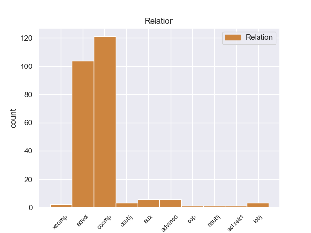
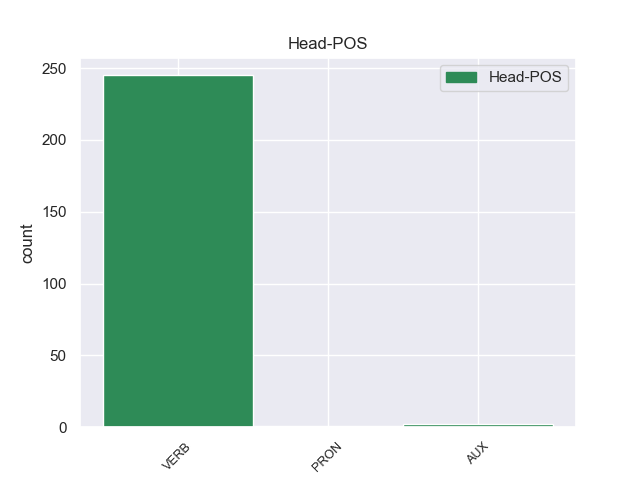
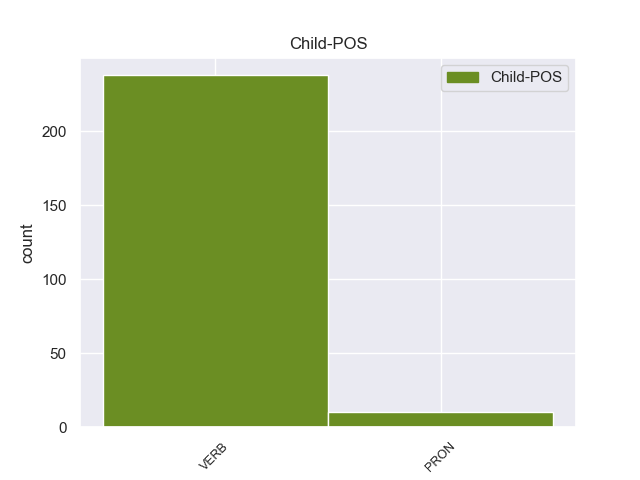

Distribution of features within this leaf



Agreement Rules sorted by frequency.
- When the dependent token is the clausal complement(ccomp) of the head token, and the dependent token is VERB.
1 από _ _ _ _ 0 _ _ _
2 τα _ _ _ _ 0 _ _ _
3 δε _ _ _ _ 0 _ _ _
4 έγγραφα _ _ _ _ 0 _ _ _
5 της _ _ _ _ 0 _ _ _
6 υπόθεσης _ _ _ _ 0 _ _ _
7 προκύπτει προκύπτειr VERB _ Mood=Ind|Number=Sing|Person=3|Tense=Pres|VerbForm=Fin 0 _ _ _
8 ότι _ _ _ _ 0 _ _ _
9 δεν _ _ _ _ 0 _ _ _
10 φαίνεται φαίνεταιr VERB _ Mood=Ind|Number=Sing|Person=3|Tense=Pres|VerbForm=Fin 7 ccomp _ _
11 να _ _ _ _ 0 _ _ _
12 έχει _ _ _ _ 0 _ _ _
13 ληφθεί _ _ _ _ 0 _ _ _
14 υπόψη _ _ _ _ 0 _ _ _
15 η _ _ _ _ 0 _ _ _
16 σύσταση _ _ _ _ 0 _ _ _
17 να _ _ _ _ 0 _ _ _
18 διαβιβαστεί _ _ _ _ 0 _ _ _
19 η _ _ _ _ 0 _ _ _
20 αίτηση _ _ _ _ 0 _ _ _
21 άρσης _ _ _ _ 0 _ _ _
22 της _ _ _ _ 0 _ _ _
23 ασυλίας _ _ _ _ 0 _ _ _
24 μόνον _ _ _ _ 0 _ _ _
25 επί _ _ _ _ 0 _ _ _
26 τη _ _ _ _ 0 _ _ _
27 βάσει _ _ _ _ 0 _ _ _
28 ακριβέστερου _ _ _ _ 0 _ _ _
29 προσδιορισμού _ _ _ _ 0 _ _ _
30 όσον _ _ _ _ 0 _ _ _
31 αφορά _ _ _ _ 0 _ _ _
32 τους _ _ _ _ 0 _ _ _
33 τόπους _ _ _ _ 0 _ _ _
34 και _ _ _ _ 0 _ _ _
35 τα _ _ _ _ 0 _ _ _
36 πρόσωπα _ _ _ _ 0 _ _ _
37 που _ _ _ _ 0 _ _ _
38 εμπλέκονται _ _ _ _ 0 _ _ _
39 σ _ _ _ _ 0 _ _ _
40 την _ _ _ _ 0 _ _ _
41 υπόθεση _ _ _ _ 0 _ _ _
42 . _ _ _ _ 0 _ _ _
1 Ο _ _ _ _ 0 _ _ _
2 Μπαράκ _ _ _ _ 0 _ _ _
3 Ομπάμα _ _ _ _ 0 _ _ _
4 ανέφερε _ _ _ _ 0 _ _ _
5 ότι _ _ _ _ 0 _ _ _
6 « _ _ _ _ 0 _ _ _
7 ήδη _ _ _ _ 0 _ _ _
8 υπάρχουν _ _ _ _ 0 _ _ _
9 πολλές _ _ _ _ 0 _ _ _
10 αναφορές _ _ _ _ 0 _ _ _
11 για _ _ _ _ 0 _ _ _
12 πόλεμο _ _ _ _ 0 _ _ _
13 με _ _ _ _ 0 _ _ _
14 το _ _ _ _ 0 _ _ _
15 Ιράν _ _ _ _ 0 _ _ _
16 » _ _ _ _ 0 _ _ _
17 και _ _ _ _ 0 _ _ _
18 επεσήμανε _ _ _ _ 0 _ _ _
19 τέτοιες _ _ _ _ 0 _ _ _
20 συζητήσεις _ _ _ _ 0 _ _ _
21 « _ _ _ _ 0 _ _ _
22 είναι είνar VERB _ Mood=Ind|Number=Plur|Person=3|Tense=Pres|VerbForm=Fin 0 _ _ _
23 προς _ _ _ _ 0 _ _ _
24 όφελος _ _ _ _ 0 _ _ _
25 της _ _ _ _ 0 _ _ _
26 Τεχεράνης _ _ _ _ 0 _ _ _
27 γιατί _ _ _ _ 0 _ _ _
28 αυξάνουν αυξάνουr VERB _ Mood=Ind|Number=Plur|Person=3|Tense=Pres|VerbForm=Fin 22 advcl _ _
29 τις _ _ _ _ 0 _ _ _
30 τιμές _ _ _ _ 0 _ _ _
31 του _ _ _ _ 0 _ _ _
32 πετρελαίου _ _ _ _ 0 _ _ _
33 , _ _ _ _ 0 _ _ _
34 σ _ _ _ _ 0 _ _ _
35 το _ _ _ _ 0 _ _ _
36 οποίο _ _ _ _ 0 _ _ _
37 βασίζεται _ _ _ _ 0 _ _ _
38 η _ _ _ _ 0 _ _ _
39 Ιρανική _ _ _ _ 0 _ _ _
40 Κυβέρνηση _ _ _ _ 0 _ _ _
41 για _ _ _ _ 0 _ _ _
42 την _ _ _ _ 0 _ _ _
43 χρηματοδότηση _ _ _ _ 0 _ _ _
44 του _ _ _ _ 0 _ _ _
45 πυρηνικού _ _ _ _ 0 _ _ _
46 της _ _ _ _ 0 _ _ _
47 προγράμματος _ _ _ _ 0 _ _ _
48 » _ _ _ _ 0 _ _ _
49 . _ _ _ _ 0 _ _ _
1 " _ _ _ _ 0 _ _ _
2 Θα θα PRON _ Mood=Ind|Number=Plur|Person=1|Tense=Pres|VerbForm=Fin 3 aux _ _
3 καταβάλουμε καταβάλοer VERB _ Mood=Ind|Number=Sing|Person=1|Tense=Pres|VerbForm=Fin 0 _ _ _
4 κάθε _ _ _ _ 0 _ _ _
5 προσπάθεια _ _ _ _ 0 _ _ _
6 για _ _ _ _ 0 _ _ _
7 να _ _ _ _ 0 _ _ _
8 ολοκληρώσουμε _ _ _ _ 0 _ _ _
9 την _ _ _ _ 0 _ _ _
10 έρευνα _ _ _ _ 0 _ _ _
11 το _ _ _ _ 0 _ _ _
12 συντομότερο _ _ _ _ 0 _ _ _
13 δυνατόν _ _ _ _ 0 _ _ _
14 γιατί _ _ _ _ 0 _ _ _
15 το _ _ _ _ 0 _ _ _
16 Βιετνάμ _ _ _ _ 0 _ _ _
17 έχει _ _ _ _ 0 _ _ _
18 πραγματικά _ _ _ _ 0 _ _ _
19 ανάγκη _ _ _ _ 0 _ _ _
20 το _ _ _ _ 0 _ _ _
21 εμβόλιο _ _ _ _ 0 _ _ _
22 αυτό _ _ _ _ 0 _ _ _
23 " _ _ _ _ 0 _ _ _
24 , _ _ _ _ 0 _ _ _
25 τόνισε _ _ _ _ 0 _ _ _
26 η _ _ _ _ 0 _ _ _
27 Νγκουγέν _ _ _ _ 0 _ _ _
28 Τι _ _ _ _ 0 _ _ _
29 Χονγκ _ _ _ _ 0 _ _ _
30 Χανχ _ _ _ _ 0 _ _ _
31 αναπληρώτρια _ _ _ _ 0 _ _ _
32 διευθύντρια _ _ _ _ 0 _ _ _
33 του _ _ _ _ 0 _ _ _
34 Εθνικού _ _ _ _ 0 _ _ _
35 Ινστιτούτου _ _ _ _ 0 _ _ _
36 Επιδημιολογίας _ _ _ _ 0 _ _ _
37 . _ _ _ _ 0 _ _ _
1 Το _ _ _ _ 0 _ _ _
2 μόνο _ _ _ _ 0 _ _ _
3 συνεπώς _ _ _ _ 0 _ _ _
4 που _ _ _ _ 0 _ _ _
5 μπορούσαν _ _ _ _ 0 _ _ _
6 να _ _ _ _ 0 _ _ _
7 κάνουν _ _ _ _ 0 _ _ _
8 ήταν _ _ _ _ 0 _ _ _
9 ν' _ _ _ _ 0 _ _ _
10 αυξήσουν _ _ _ _ 0 _ _ _
11 την _ _ _ _ 0 _ _ _
12 επιρροή _ _ _ _ 0 _ _ _
13 τους _ _ _ _ 0 _ _ _
14 σ _ _ _ _ 0 _ _ _
15 τους _ _ _ _ 0 _ _ _
16 πληθυσμούς _ _ _ _ 0 _ _ _
17 της _ _ _ _ 0 _ _ _
18 περιοχής _ _ _ _ 0 _ _ _
19 , _ _ _ _ 0 _ _ _
20 παράλληλα _ _ _ _ 0 _ _ _
21 μ' _ _ _ _ 0 _ _ _
22 εκείνη _ _ _ _ 0 _ _ _
23 προς _ _ _ _ 0 _ _ _
24 τον _ _ _ _ 0 _ _ _
25 Σουλτάνο _ _ _ _ 0 _ _ _
26 σ _ _ _ _ 0 _ _ _
27 τη _ _ _ _ 0 _ _ _
28 Κωνσταντινούπολη _ _ _ _ 0 _ _ _
29 , _ _ _ _ 0 _ _ _
30 για _ _ _ _ 0 _ _ _
31 όσο _ _ _ _ 0 _ _ _
32 χρόνο _ _ _ _ 0 _ _ _
33 θα _ _ _ _ 0 _ _ _
34 " _ _ _ _ 0 _ _ _
35 παρέμενε _ _ _ _ 0 _ _ _
36 " _ _ _ _ 0 _ _ _
37 ( _ _ _ _ 0 _ _ _
38 ή _ _ _ _ 0 _ _ _
39 θα _ _ _ _ 0 _ _ _
40 του _ _ _ _ 0 _ _ _
41 επέτρεπαν _ _ _ _ 0 _ _ _
42 ) _ _ _ _ 0 _ _ _
43 τη _ _ _ _ 0 _ _ _
44 συνέχεια _ _ _ _ 0 _ _ _
45 της _ _ _ _ 0 _ _ _
46 Αυτοκρατορίας _ _ _ _ 0 _ _ _
47 του _ _ _ _ 0 _ _ _
48 , _ _ _ _ 0 _ _ _
49 προκειμένου _ _ _ _ 0 _ _ _
50 να _ _ _ _ 0 _ _ _
51 είναι _ _ _ _ 0 _ _ _
52 έτοιμες _ _ _ _ 0 _ _ _
53 να _ _ _ _ 0 _ _ _
54 υποστηρίξουν _ _ _ _ 0 _ _ _
55 ένα _ _ _ _ 0 _ _ _
56 ή _ _ _ _ 0 _ _ _
57 περισσότερους _ _ _ _ 0 _ _ _
58 από _ _ _ _ 0 _ _ _
59 τους _ _ _ _ 0 _ _ _
60 διαδόχους _ _ _ _ 0 _ _ _
61 του _ _ _ _ 0 _ _ _
62 οθωμανικού _ _ _ _ 0 _ _ _
63 καθεστώτος _ _ _ _ 0 _ _ _
64 που _ _ _ _ 0 _ _ _
65 θα _ _ _ _ 0 _ _ _
66 μπορούσαν μπορούer VERB _ Mood=Ind|Number=Plur|Person=3|Tense=Imp|VerbForm=Fin 68 aux _ _
67 να _ _ _ _ 0 _ _ _
68 ήταν ήτr VERB _ Mood=Ind|Number=Plur|Person=3|Tense=Imp|VerbForm=Fin 0 _ _ _
69 οι _ _ _ _ 0 _ _ _
70 Σέρβοι _ _ _ _ 0 _ _ _
71 , _ _ _ _ 0 _ _ _
72 οι _ _ _ _ 0 _ _ _
73 Έλληνες _ _ _ _ 0 _ _ _
74 , _ _ _ _ 0 _ _ _
75 οι _ _ _ _ 0 _ _ _
76 Βούλγαροι _ _ _ _ 0 _ _ _
77 , _ _ _ _ 0 _ _ _
78 οι _ _ _ _ 0 _ _ _
79 Αλβανοί _ _ _ _ 0 _ _ _
80 , _ _ _ _ 0 _ _ _
81 ακόμα _ _ _ _ 0 _ _ _
82 και _ _ _ _ 0 _ _ _
83 οι _ _ _ _ 0 _ _ _
84 γηγενείς _ _ _ _ 0 _ _ _
85 Μακεδόνες _ _ _ _ 0 _ _ _
86 , _ _ _ _ 0 _ _ _
87 που _ _ _ _ 0 _ _ _
88 οι _ _ _ _ 0 _ _ _
89 πιθανότητές _ _ _ _ 0 _ _ _
90 να _ _ _ _ 0 _ _ _
91 ιδρύσουν _ _ _ _ 0 _ _ _
92 ανεξάρτητα _ _ _ _ 0 _ _ _
93 έθνη _ _ _ _ 0 _ _ _
94 δεν _ _ _ _ 0 _ _ _
95 ήταν _ _ _ _ 0 _ _ _
96 και _ _ _ _ 0 _ _ _
97 εντελώς _ _ _ _ 0 _ _ _
98 ανύπαρκτες _ _ _ _ 0 _ _ _
99 . _ _ _ _ 0 _ _ _
1 El _ _ _ _ 0 _ _ _
2 Lyon _ _ _ _ 0 _ _ _
3 ha _ _ _ _ 0 _ _ _
4 asumido _ _ _ _ 0 _ _ _
5 la _ _ _ _ 0 _ _ _
6 marcha _ _ _ _ 0 _ _ _
7 de _ _ _ _ 0 _ _ _
8 uno _ _ _ _ 0 _ _ _
9 de _ _ _ _ 0 _ _ _
10 sus _ _ _ _ 0 _ _ _
11 jugadores _ _ _ _ 0 _ _ _
12 a _ _ _ _ 0 _ _ _
13 el _ _ _ _ 0 _ _ _
14 Málaga _ _ _ _ 0 _ _ _
15 que _ _ _ _ 0 _ _ _
16 es ser VERB _ Mood=Ind|Number=Sing|Person=3|Tense=Pres|VerbForm=Fin 0 _ _ _
17 quien _ _ _ _ 0 _ _ _
18 acometerá acometer VERB _ Mood=Ind|Number=Sing|Person=3|Tense=Fut|VerbForm=Fin 16 xcomp _ _
19 el _ _ _ _ 0 _ _ _
20 fichaje _ _ _ _ 0 _ _ _
21 de _ _ _ _ 0 _ _ _
22 Toulalan _ _ _ _ 0 _ _ _
23 , _ _ _ _ 0 _ _ _
24 un _ _ _ _ 0 _ _ _
25 jugador _ _ _ _ 0 _ _ _
26 que _ _ _ _ 0 _ _ _
27 seguramente _ _ _ _ 0 _ _ _
28 saldrá _ _ _ _ 0 _ _ _
29 rumbo _ _ _ _ 0 _ _ _
30 a _ _ _ _ 0 _ _ _
31 España _ _ _ _ 0 _ _ _
32 a _ _ _ _ 0 _ _ _
33 jugar _ _ _ _ 0 _ _ _
34 la _ _ _ _ 0 _ _ _
35 Liga _ _ _ _ 0 _ _ _
36 BBVA _ _ _ _ 0 _ _ _
37 . _ _ _ _ 0 _ _ _
1 Επιτυχία επιτυχία VERB _ Mood=Ind|Number=Sing|Person=3|Tense=Pres|VerbForm=Fin 0 _ _ _
2 επίσης _ _ _ _ 0 _ _ _
3 , _ _ _ _ 0 _ _ _
4 και _ _ _ _ 0 _ _ _
5 αυτή _ _ _ _ 0 _ _ _
6 τη _ _ _ _ 0 _ _ _
7 φορά _ _ _ _ 0 _ _ _
8 μπορούμε μποροr VERB _ Mood=Ind|Number=Sing|Person=3|Tense=Pres|VerbForm=Fin 1 csubj _ _
9 να _ _ _ _ 0 _ _ _
10 το _ _ _ _ 0 _ _ _
11 πούμε _ _ _ _ 0 _ _ _
12 , _ _ _ _ 0 _ _ _
13 της _ _ _ _ 0 _ _ _
14 Επιτροπής _ _ _ _ 0 _ _ _
15 , _ _ _ _ 0 _ _ _
16 η _ _ _ _ 0 _ _ _
17 οποία _ _ _ _ 0 _ _ _
18 ήταν _ _ _ _ 0 _ _ _
19 υπεύθυνη _ _ _ _ 0 _ _ _
20 για _ _ _ _ 0 _ _ _
21 το _ _ _ _ 0 _ _ _
22 εγχείρημα _ _ _ _ 0 _ _ _
23 , _ _ _ _ 0 _ _ _
24 του _ _ _ _ 0 _ _ _
25 Προέδρου _ _ _ _ 0 _ _ _
26 Πρόντι _ _ _ _ 0 _ _ _
27 , _ _ _ _ 0 _ _ _
28 ο _ _ _ _ 0 _ _ _
29 οποίος _ _ _ _ 0 _ _ _
30 , _ _ _ _ 0 _ _ _
31 όταν _ _ _ _ 0 _ _ _
32 ήταν _ _ _ _ 0 _ _ _
33 Πρόεδρος _ _ _ _ 0 _ _ _
34 του _ _ _ _ 0 _ _ _
35 Ecofin _ _ _ _ 0 _ _ _
36 , _ _ _ _ 0 _ _ _
37 κατέστησε _ _ _ _ 0 _ _ _
38 δυνατή _ _ _ _ 0 _ _ _
39 την _ _ _ _ 0 _ _ _
40 είσοδο _ _ _ _ 0 _ _ _
41 της _ _ _ _ 0 _ _ _
42 Ιταλίας _ _ _ _ 0 _ _ _
43 σ _ _ _ _ 0 _ _ _
44 το _ _ _ _ 0 _ _ _
45 ευρώ _ _ _ _ 0 _ _ _
46 με _ _ _ _ 0 _ _ _
47 τον _ _ _ _ 0 _ _ _
48 σημερινό _ _ _ _ 0 _ _ _
49 Πρόεδρο _ _ _ _ 0 _ _ _
50 της _ _ _ _ 0 _ _ _
51 Δημοκρατίας _ _ _ _ 0 _ _ _
52 , _ _ _ _ 0 _ _ _
53 μίας _ _ _ _ 0 _ _ _
54 χώρας _ _ _ _ 0 _ _ _
55 της _ _ _ _ 0 _ _ _
56 οποίας _ _ _ _ 0 _ _ _
57 η _ _ _ _ 0 _ _ _
58 τρέχουσα _ _ _ _ 0 _ _ _
59 κυβέρνηση _ _ _ _ 0 _ _ _
60 επέλεξε _ _ _ _ 0 _ _ _
61 την _ _ _ _ 0 _ _ _
62 πρώτη _ _ _ _ 0 _ _ _
63 Ιανουαρίου _ _ _ _ 0 _ _ _
64 , _ _ _ _ 0 _ _ _
65 εν _ _ _ _ 0 _ _ _
66 μέρει _ _ _ _ 0 _ _ _
67 , _ _ _ _ 0 _ _ _
68 να _ _ _ _ 0 _ _ _
69 δυσφημίσει _ _ _ _ 0 _ _ _
70 το _ _ _ _ 0 _ _ _
71 κοινό _ _ _ _ 0 _ _ _
72 νόμισμα _ _ _ _ 0 _ _ _
73 . _ _ _ _ 0 _ _ _
1 Θα θα PRON _ Mood=Ind|Number=Plur|Person=1|Tense=Pres|VerbForm=Fin 2 advmod _ _
2 έπρεπε έπρεr VERB _ Mood=Ind|Number=Plur|Person=3|Tense=Past|VerbForm=Fin 0 _ _ _
3 να _ _ _ _ 0 _ _ _
4 περνούν _ _ _ _ 0 _ _ _
5 τον _ _ _ _ 0 _ _ _
6 περισσότερο _ _ _ _ 0 _ _ _
7 χρόνο _ _ _ _ 0 _ _ _
8 τους _ _ _ _ 0 _ _ _
9 εδώ _ _ _ _ 0 _ _ _
10 . _ _ _ _ 0 _ _ _
1 Όντως _ _ _ _ 0 _ _ _
2 τελικά _ _ _ _ 0 _ _ _
3 το _ _ _ _ 0 _ _ _
4 κίνημα _ _ _ _ 0 _ _ _
5 των _ _ _ _ 0 _ _ _
6 Κρητικών _ _ _ _ 0 _ _ _
7 προσωρινά προσωρινar VERB _ Mood=Ind|Number=Sing|Person=3|Tense=Past|VerbForm=Fin 8 advmod _ _
8 ανεστάλη ανεστάλar VERB _ Mood=Ind|Number=Sing|Person=3|Tense=Past|VerbForm=Fin 0 _ _ _
9 . _ _ _ _ 0 _ _ _
1 Θα θα PRON _ Mood=Ind|Number=Plur|Person=1|Tense=Pres|VerbForm=Fin 2 iobj _ _
2 θέλαμε θέλr VERB _ Mood=Ind|Number=Sing|Person=1|Tense=Pres|VerbForm=Fin 0 _ _ _
3 να _ _ _ _ 0 _ _ _
4 σας _ _ _ _ 0 _ _ _
5 ευχαριστήσουμε _ _ _ _ 0 _ _ _
6 γι' _ _ _ _ 0 _ _ _
7 αυτό _ _ _ _ 0 _ _ _
8 και _ _ _ _ 0 _ _ _
9 να _ _ _ _ 0 _ _ _
10 σας _ _ _ _ 0 _ _ _
11 ευχηθούμε _ _ _ _ 0 _ _ _
12 να _ _ _ _ 0 _ _ _
13 μπορέσετε _ _ _ _ 0 _ _ _
14 να _ _ _ _ 0 _ _ _
15 διατηρήσετε _ _ _ _ 0 _ _ _
16 την _ _ _ _ 0 _ _ _
17 πολιτική _ _ _ _ 0 _ _ _
18 αυτή _ _ _ _ 0 _ _ _
19 σ _ _ _ _ 0 _ _ _
20 το _ _ _ _ 0 _ _ _
21 πρακτικό _ _ _ _ 0 _ _ _
22 σας _ _ _ _ 0 _ _ _
23 έργο _ _ _ _ 0 _ _ _
24 αυτών _ _ _ _ 0 _ _ _
25 των _ _ _ _ 0 _ _ _
26 δυόμισι _ _ _ _ 0 _ _ _
27 ετών _ _ _ _ 0 _ _ _
28 . _ _ _ _ 0 _ _ _
1 Οι _ _ _ _ 0 _ _ _
2 ασκήσεις _ _ _ _ 0 _ _ _
3 τέτοιου _ _ _ _ 0 _ _ _
4 τύπου _ _ _ _ 0 _ _ _
5 δεν _ _ _ _ 0 _ _ _
6 είναι _ _ _ _ 0 _ _ _
7 ασυνήθιστες _ _ _ _ 0 _ _ _
8 , _ _ _ _ 0 _ _ _
9 αλλά _ _ _ _ 0 _ _ _
10 συνήθως _ _ _ _ 0 _ _ _
11 επιβαρύνουν _ _ _ _ 0 _ _ _
12 ακόμα _ _ _ _ 0 _ _ _
13 περισσότερο _ _ _ _ 0 _ _ _
14 τις _ _ _ _ 0 _ _ _
15 σχέσεις _ _ _ _ 0 _ _ _
16 μεταξύ _ _ _ _ 0 _ _ _
17 των _ _ _ _ 0 _ _ _
18 δύο _ _ _ _ 0 _ _ _
19 χωρών _ _ _ _ 0 _ _ _
20 , _ _ _ _ 0 _ _ _
21 οι _ _ _ _ 0 _ _ _
22 οποίες _ _ _ _ 0 _ _ _
23 εξακολουθούν εξακολουθούr VERB _ Mood=Ind|Number=Plur|Person=3|Tense=Pres|VerbForm=Fin 0 _ _ _
24 να _ _ _ _ 0 _ _ _
25 είναι είνar VERB _ Mood=Ind|Number=Plur|Person=3|Tense=Pres|VerbForm=Fin 23 cop _ _
26 τεχνικά _ _ _ _ 0 _ _ _
27 σε _ _ _ _ 0 _ _ _
28 εμπόλεμη _ _ _ _ 0 _ _ _
29 κατάσταση _ _ _ _ 0 _ _ _
30 . _ _ _ _ 0 _ _ _
1 Το _ _ _ _ 0 _ _ _
2 30% _ _ _ _ 0 _ _ _
3 όσων όσω PRON _ Mood=Ind|Number=Plur|Person=3|Tense=Imp|VerbForm=Fin 8 nsubj _ _
4 συμμετείχαν _ _ _ _ 0 _ _ _
5 σ _ _ _ _ 0 _ _ _
6 την _ _ _ _ 0 _ _ _
7 έρευνα _ _ _ _ 0 _ _ _
8 απάντησε απάντησar VERB _ Mood=Ind|Number=Sing|Person=3|Tense=Past|VerbForm=Fin 0 _ _ _
9 ότι _ _ _ _ 0 _ _ _
10 τουλάχιστον _ _ _ _ 0 _ _ _
11 άλλο _ _ _ _ 0 _ _ _
12 ένα _ _ _ _ 0 _ _ _
13 μέλος _ _ _ _ 0 _ _ _
14 της _ _ _ _ 0 _ _ _
15 οικογενείας _ _ _ _ 0 _ _ _
16 του _ _ _ _ 0 _ _ _
17 αναζητά _ _ _ _ 0 _ _ _
18 εργασία _ _ _ _ 0 _ _ _
19 σ _ _ _ _ 0 _ _ _
20 το _ _ _ _ 0 _ _ _
21 εξωτερικό _ _ _ _ 0 _ _ _
22 " _ _ _ _ 0 _ _ _
23 . _ _ _ _ 0 _ _ _
1 Το _ _ _ _ 0 _ _ _
2 30% _ _ _ _ 0 _ _ _
3 όσων όσω PRON _ Mood=Ind|Number=Plur|Person=3|Tense=Imp|VerbForm=Fin 0 _ _ _
4 συμμετείχαν συμμετείr VERB _ Mood=Ind|Number=Plur|Person=3|Tense=Imp|VerbForm=Fin 3 acl:relcl _ _
5 σ _ _ _ _ 0 _ _ _
6 την _ _ _ _ 0 _ _ _
7 έρευνα _ _ _ _ 0 _ _ _
8 απάντησε _ _ _ _ 0 _ _ _
9 ότι _ _ _ _ 0 _ _ _
10 τουλάχιστον _ _ _ _ 0 _ _ _
11 άλλο _ _ _ _ 0 _ _ _
12 ένα _ _ _ _ 0 _ _ _
13 μέλος _ _ _ _ 0 _ _ _
14 της _ _ _ _ 0 _ _ _
15 οικογενείας _ _ _ _ 0 _ _ _
16 του _ _ _ _ 0 _ _ _
17 αναζητά _ _ _ _ 0 _ _ _
18 εργασία _ _ _ _ 0 _ _ _
19 σ _ _ _ _ 0 _ _ _
20 το _ _ _ _ 0 _ _ _
21 εξωτερικό _ _ _ _ 0 _ _ _
22 " _ _ _ _ 0 _ _ _
23 . _ _ _ _ 0 _ _ _
Disagree Examples:
1 Como _ _ _ _ 0 _ _ _
2 se _ _ _ _ 0 _ _ _
3 ve ver VERB _ Mood=Ind|Number=Sing|Person=3|Tense=Pres|VerbForm=Fin 14 advcl _ _
4 si _ _ _ _ 0 _ _ _
5 una _ _ _ _ 0 _ _ _
6 de _ _ _ _ 0 _ _ _
7 las _ _ _ _ 0 _ _ _
8 dos _ _ _ _ 0 _ _ _
9 fuerzas _ _ _ _ 0 _ _ _
10 fallase _ _ _ _ 0 _ _ _
11 los _ _ _ _ 0 _ _ _
12 acontecimientos _ _ _ _ 0 _ _ _
13 se _ _ _ _ 0 _ _ _
14 sucederían suceder VERB _ Mood=Cnd|Number=Plur|Person=3|VerbForm=Fin 0 _ _ _
15 muy _ _ _ _ 0 _ _ _
16 repentinamente _ _ _ _ 0 _ _ _
17 hasta _ _ _ _ 0 _ _ _
18 volver _ _ _ _ 0 _ _ _
19 a _ _ _ _ 0 _ _ _
20 recuperar _ _ _ _ 0 _ _ _
21 el _ _ _ _ 0 _ _ _
22 equilibrio _ _ _ _ 0 _ _ _
23 . _ _ _ _ 0 _ _ _
1 Como _ _ _ _ 0 _ _ _
2 se _ _ _ _ 0 _ _ _
3 ve _ _ _ _ 0 _ _ _
4 si _ _ _ _ 0 _ _ _
5 una _ _ _ _ 0 _ _ _
6 de _ _ _ _ 0 _ _ _
7 las _ _ _ _ 0 _ _ _
8 dos _ _ _ _ 0 _ _ _
9 fuerzas _ _ _ _ 0 _ _ _
10 fallase fallar VERB _ Mood=Sub|Number=Sing|Person=3|Tense=Imp|VerbForm=Fin 14 advcl _ _
11 los _ _ _ _ 0 _ _ _
12 acontecimientos _ _ _ _ 0 _ _ _
13 se _ _ _ _ 0 _ _ _
14 sucederían suceder VERB _ Mood=Cnd|Number=Plur|Person=3|VerbForm=Fin 0 _ _ _
15 muy _ _ _ _ 0 _ _ _
16 repentinamente _ _ _ _ 0 _ _ _
17 hasta _ _ _ _ 0 _ _ _
18 volver _ _ _ _ 0 _ _ _
19 a _ _ _ _ 0 _ _ _
20 recuperar _ _ _ _ 0 _ _ _
21 el _ _ _ _ 0 _ _ _
22 equilibrio _ _ _ _ 0 _ _ _
23 . _ _ _ _ 0 _ _ _
1 En _ _ _ _ 0 _ _ _
2 este _ _ _ _ 0 _ _ _
3 sentido _ _ _ _ 0 _ _ _
4 , _ _ _ _ 0 _ _ _
5 solo _ _ _ _ 0 _ _ _
6 la _ _ _ _ 0 _ _ _
7 parte _ _ _ _ 0 _ _ _
8 de _ _ _ _ 0 _ _ _
9 violín _ _ _ _ 0 _ _ _
10 es ser VERB _ Mood=Ind|Number=Sing|Person=3|Tense=Pres|VerbForm=Fin 0 _ _ _
11 de _ _ _ _ 0 _ _ _
12 fácil _ _ _ _ 0 _ _ _
13 ejecución _ _ _ _ 0 _ _ _
14 , _ _ _ _ 0 _ _ _
15 mientras _ _ _ _ 0 _ _ _
16 que _ _ _ _ 0 _ _ _
17 la _ _ _ _ 0 _ _ _
18 parte _ _ _ _ 0 _ _ _
19 para _ _ _ _ 0 _ _ _
20 teclado _ _ _ _ 0 _ _ _
21 no _ _ _ _ 0 _ _ _
22 sería ser VERB _ Mood=Cnd|Number=Sing|Person=3|VerbForm=Fin 10 advcl _ _
23 « _ _ _ _ 0 _ _ _
24 para _ _ _ _ 0 _ _ _
25 principiantes _ _ _ _ 0 _ _ _
26 » _ _ _ _ 0 _ _ _
27 . _ _ _ _ 0 _ _ _
1 Cameron _ _ _ _ 0 _ _ _
2 , _ _ _ _ 0 _ _ _
3 quien _ _ _ _ 0 _ _ _
4 hacia _ _ _ _ 0 _ _ _
5 de _ _ _ _ 0 _ _ _
6 productor _ _ _ _ 0 _ _ _
7 en _ _ _ _ 0 _ _ _
8 ese _ _ _ _ 0 _ _ _
9 momento _ _ _ _ 0 _ _ _
10 reconoció reconocer VERB _ Mood=Ind|Number=Sing|Person=3|Tense=Past|VerbForm=Fin 0 _ _ _
11 que _ _ _ _ 0 _ _ _
12 probablemente _ _ _ _ 0 _ _ _
13 tendría tener VERB _ Mood=Cnd|Number=Sing|Person=3|VerbForm=Fin 10 ccomp _ _
14 problemas _ _ _ _ 0 _ _ _
15 con _ _ _ _ 0 _ _ _
16 la _ _ _ _ 0 _ _ _
17 dirección _ _ _ _ 0 _ _ _
18 . _ _ _ _ 0 _ _ _
1 El _ _ _ _ 0 _ _ _
2 gobierno _ _ _ _ 0 _ _ _
3 central _ _ _ _ 0 _ _ _
4 decidió decidir VERB _ Mood=Ind|Number=Sing|Person=3|Tense=Past|VerbForm=Fin 0 _ _ _
5 en _ _ _ _ 0 _ _ _
6 el _ _ _ _ 0 _ _ _
7 año _ _ _ _ 0 _ _ _
8 2009 _ _ _ _ 0 _ _ _
9 que _ _ _ _ 0 _ _ _
10 el _ _ _ _ 0 _ _ _
11 Ministerio _ _ _ _ 0 _ _ _
12 de _ _ _ _ 0 _ _ _
13 Transportes _ _ _ _ 0 _ _ _
14 y _ _ _ _ 0 _ _ _
15 Comunicaciones _ _ _ _ 0 _ _ _
16 ( _ _ _ _ 0 _ _ _
17 MTC _ _ _ _ 0 _ _ _
18 ) _ _ _ _ 0 _ _ _
19 retomara retomar VERB _ Mood=Sub|Number=Sing|Person=3|Tense=Imp|VerbForm=Fin 4 ccomp _ _
20 la _ _ _ _ 0 _ _ _
21 administración _ _ _ _ 0 _ _ _
22 de _ _ _ _ 0 _ _ _
23 la _ _ _ _ 0 _ _ _
24 Autoridad _ _ _ _ 0 _ _ _
25 Autónoma _ _ _ _ 0 _ _ _
26 de _ _ _ _ 0 _ _ _
27 el _ _ _ _ 0 _ _ _
28 Sistema _ _ _ _ 0 _ _ _
29 Eléctrico _ _ _ _ 0 _ _ _
30 de _ _ _ _ 0 _ _ _
31 Transporte _ _ _ _ 0 _ _ _
32 Masivo _ _ _ _ 0 _ _ _
33 de _ _ _ _ 0 _ _ _
34 Lima _ _ _ _ 0 _ _ _
35 y _ _ _ _ 0 _ _ _
36 Callao _ _ _ _ 0 _ _ _
37 ( _ _ _ _ 0 _ _ _
38 AATE _ _ _ _ 0 _ _ _
39 ) _ _ _ _ 0 _ _ _
40 , _ _ _ _ 0 _ _ _
41 encargando _ _ _ _ 0 _ _ _
42 a _ _ _ _ 0 _ _ _
43 una _ _ _ _ 0 _ _ _
44 dependencia _ _ _ _ 0 _ _ _
45 de _ _ _ _ 0 _ _ _
46 el _ _ _ _ 0 _ _ _
47 ministerio _ _ _ _ 0 _ _ _
48 llamada _ _ _ _ 0 _ _ _
49 Provias _ _ _ _ 0 _ _ _
50 Nacional _ _ _ _ 0 _ _ _
51 la _ _ _ _ 0 _ _ _
52 organización _ _ _ _ 0 _ _ _
53 de _ _ _ _ 0 _ _ _
54 una _ _ _ _ 0 _ _ _
55 licitación _ _ _ _ 0 _ _ _
56 pública _ _ _ _ 0 _ _ _
57 internacional _ _ _ _ 0 _ _ _
58 para _ _ _ _ 0 _ _ _
59 la _ _ _ _ 0 _ _ _
60 selección _ _ _ _ 0 _ _ _
61 de _ _ _ _ 0 _ _ _
62 la _ _ _ _ 0 _ _ _
63 empresa _ _ _ _ 0 _ _ _
64 que _ _ _ _ 0 _ _ _
65 lleve _ _ _ _ 0 _ _ _
66 a _ _ _ _ 0 _ _ _
67 cabo _ _ _ _ 0 _ _ _
68 las _ _ _ _ 0 _ _ _
69 obras _ _ _ _ 0 _ _ _
70 civiles _ _ _ _ 0 _ _ _
71 de _ _ _ _ 0 _ _ _
72 el _ _ _ _ 0 _ _ _
73 tramo _ _ _ _ 0 _ _ _
74 faltante _ _ _ _ 0 _ _ _
75 de _ _ _ _ 0 _ _ _
76 el _ _ _ _ 0 _ _ _
77 tren _ _ _ _ 0 _ _ _
78 y _ _ _ _ 0 _ _ _
79 el _ _ _ _ 0 _ _ _
80 equipamiento _ _ _ _ 0 _ _ _
81 electromecánico _ _ _ _ 0 _ _ _
82 de _ _ _ _ 0 _ _ _
83 el _ _ _ _ 0 _ _ _
84 mismo _ _ _ _ 0 _ _ _
85 . _ _ _ _ 0 _ _ _